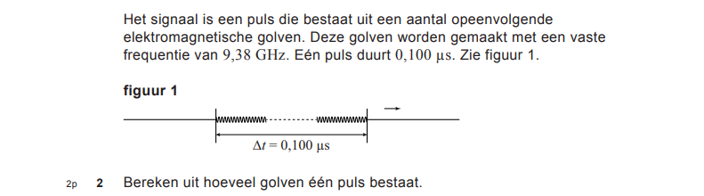
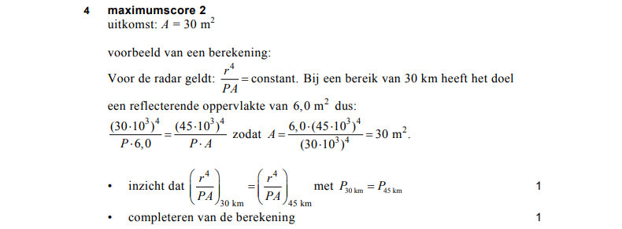

Havo-examen natuurkunde 2018
Contents
Havo-examen natuurkunde 2018#
Je kunt Elm gebruiken als een rekenmachine met formules: je maakt eerst de formules met behulp van functies, en vult pas in de laatste stap de gegevens in. Deze aanpak kun je gebruiken bij het uitwerken van de onderstaande vragen van het HAVO-examen natuurkunde 2018.
We gebruiken hierbij de Elm REPL, waarmee je interactief Elm opdrachten kunt uitvoeren. Enkele regels daarbij:
gebruik 1 functiedefinitie per Jupyter Notebook cel.
gebruik unieke functienamen.
door programmeerfouten kan de kernel “in de war raken”. Je kunt altijd de kernel opnieuw starten; vergeet dan niet de onderstaande functiedefinities
millienz. weer uit te voeren, bijvoorbeeld “Restart and Run up to selected cell”.
De eerste vraag is uitgewerkt als voorbeeld. Werk de vragen 2, 3, en 4 zelf uit.
Voorbereiding#
We definiëren eerst een paar algemene constanten en functies. De lichtsnelheid \(c = 3.0 \cdot 10^8\):
c = 3.0e8
300000000 : Float
De onderstaande functies zijn handig bij het werken met extra kleine of grote waarden. Je kunt dan bijvoorbeeld schrijven milli 0.3 in plaats van 0.0003 of 0.3e-3
milli g = g * 10^(-3)
<function> : number -> number
micro g = g * 10^(-6)
<function> : number -> number
giga g = g * 10^9
<function> : number -> number
kilo g = g * 10^3
<function> : number -> number
We gebruiken de onderstaande functie om aan te geven wat je zelf nog moet uitwerken.
werkzelfuit = 0
0 : number
Vraag 1#
Antwoord Vraag 1#

Elm uitwerking vraag 1#
Volg de stappen in het antwoord vraag 1 hierboven.
Gebruik hier de volgende aanpak:
definieer eerst de formules, bijvoorbeeld in de vorm van functies;
vul in de laatste stap de gegeven (gemeten) waarden in.
(1) Elektromagnetische golvan planten zich voort met de lichtsnelheid \(c\). De afstand die het signaal in tijd \(t\) aflegt, s_signaal t, is dan \(ct\):
s_signaal t = c * t
<function> : Float -> Float
(2) Inzicht: het signaal gaat naar het object en terug, de afstand tot het object, s_object t, is dus de helft van de afstand die het signaal in tijd \(t\) aflegt:
s_object t = 0.5 * (s_signaal t)
<function> : Float -> Float
(3) Combineren van (1) en (2) met de gemeten waarde van 0,26 milliseconden voor de tijd tussen zenden en ontvangen. De afstand (in meters) is dan:
afstand = s_object (milli 0.26)
39000.00000000001 : Float
We kunnen dit ook netter weergeven, via "Afstand = " ++ (String.fromFloat afstand) ++ " m"
"Afstand = " ++ (String.fromFloat afstand) ++ " m"
"Afstand = 39000.00000000001 m" : String
Opgave Vraag 2#

Antwoord Vraag 2#
Elm Uitwerking Vraag 2#
Bestudeer de Elm uitwerking van Vraag1 en voeg de ontbrekende code toe aan de Elm Uitwerking van Vraag2.
De periode (duur) van één golf van frequentie \(f\) is \(1/f\).
periode f = werkzelfuit
<function> : a -> number
Het aantal golven in een interval \(\Delta t\) is \(\Delta t / periode\). Het interval \(\Delta t\) is 0,100 micro s. De frequentie is 9,38 giga Hz:
aantal_golven = werkzelfuit
0 : number
Opgave Vraag 3#

Antwoord Vraag 3#

Elm Uitwerking Vraag 3#
Bestudeer het antwoord op Vraag 3 en de Elm uitwerking van Vraag1 en voeg de ontbrekende code toe aan de Elm Uitwerking van Vraag3.
De radargolf plant zich voort met de lichtsnelheid \(c\). De golflengte is dan \(c~/f\):
golflengte f = werkzelfuit
<function> : a -> number
De kleinste details die waarneembaar zijn, zijn 10% van de golflengte, bij de gegeven frequentie van 9,38 giga Hz.
minimum_details = werkzelfuit
0 : number

Antwoord Vraag 4#

Elm Uitwerking Vraag 4#
Bestudeer het antwoord op vraag 4 en werk dit uit in Elm, als bij Vraag 1.
De constante voor de radarvergelijking is voor de beide afstanden gelijk (het radarvermogen is hetzelfde). Uit deze vergelijking volgt dan voor de verhouding tussen twee oppervlakken \(A_1\) en \(A_2\) op afstand \(r_1\) en \(r_2\):
ofwel
opp_a2 a1 r1 r2 = werkzelfuit
<function> : a -> b -> c -> number
Uitgewerkt voor de gegeven waarden wordt dit
oppervlakA2 = werkzelfuit
0 : number
Netjes afgedrukt:
"Het oppervlak A2 = " ++ (String.fromFloat oppervlakA2) ++ " m^2"
"Het oppervlak A2 = 0 m^2" : String